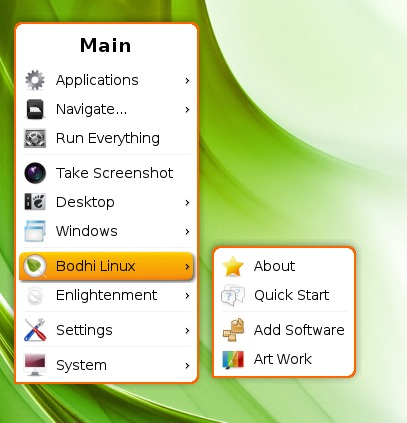

[click on any image to enlarge]
This is a beginner's introduction to E17's Menus. The current revision has been made to cover the Menus in Bodhi Linux versions 2.0 through 2.2.0. E17 has two menus and its own unique method towards altering the menus to suit your needs. The Menu found by clicking a Start button or left-clicking on an unoccupied space on the desktop is known as the Main Menu. It will be covered here, in its entirety, while the rest will be in the Modifying Menus page. Whereas, the menu displayed by right-clicking on an unoccupied space on the desktop is the Favorites Menu. On a default installation of Bodhi Linux, the Favorites Menu is empty, but, as you shall see in the Modifying Menus page, it is easy to add your own favorite applications to this menu.Introduction
The Menu is a ubiquitous part of modern Graphical Operating systems and is commonly accessed by clicking a button or icon on a panel or taskbar. The infamous Windows Start button, for example.
Enlightenment (E17) provides this common user interface through the use of a Start Gadget which can be placed anywhere on the desktop - usually it is placed on a Shelf. Most of the Profiles that come in Bodhi Linux include a "Start Button", and in most of the Themes, it looks like a Bodhi Linux leaf.
However, it is possible to remove the Start button. This may seem an odd thing to do to people unfamiliar with E17. But fear not, this does not remove the Main Menu, merely its button. E17's menus can be displayed by clicking on any unoccupied spot on the desktop.
In addition to accessing E17's Main Menu from either the Start button or from the left-click on the desktop, in Bodhi Linux there is a default key-binding to open the Main Menu from the keyboard. It's the Menu key! On most keyboards this key is to the right of the spacebar, between the Alt and Ctrl keys and looks like the image to the right. Naturally this keyboard shortcut can be changed by the user or deleted altogether.
Where Did it Go?
A minor digression on an aspect of E17's menu that may confuse some new users of Bodhi Linux: As you scroll down the Main Menu list, the sub-menu entries always open to the right of the menu. Ordinarily this is not a problem, but what if you open the Main Menu close to right edge of the screen? In that case, the sub-menu may open and be partially or totally offscreen. It appears to be a quirk with E17's menu implementation, but that thought is perhaps a bit hasty. In this scenario, you merely have to move the cursor against the right side of the screen, and the whole menu structure moves to left to reveal the hidden sub-menu items. Another example of the elegance and beauty of Enlightenment!
Menu Structure
This section is a brief description of the structure of Bodhi Linux's Main Menu, although really the best way to gain familiarity with the menu is to open it up and explore it. Nonetheless, the Main Menu in a default installation of Bodhi Linux lists, from top to bottom:
{kind=link}
Applications
Contains most of the GUI applications installed on your system, arranged in sub menus based upon categories. Most command-line applications are not displayed in the Applications Menu by default. They can, however, be added.Navigate...
Navigate is actually the menu-integrated form of the Enlightenment File Manager (EFM), the default Bodhi file manager as of 2.1.0. It allows you to open many directories directly from the menu. It has the unique feature of being able to display sub-menus of the directories within directories, as well.
The EFM requires that the EFM (Starter) Module be loaded for it to function. This module is enabled by default, with the Places module as an alternative that also has a menu-integrated form. It can be unloaded, in which case it will disappear from the menu, as well as cease to function.Run everything
Launches the Run Everything Application. The Swiss Army Knife of Enlightenment!Take Screenshot
One-click screenshot. This function is provided by the Shot Module, which is loaded by default. As with the EFM (Starter) and Places Modules, Shot can be unloaded, in which case the Take Screenshot option will disappear from the Main Menu.
Note: A screenshot of the desktop may also be taken by pressing the Print Screen key, and a screenshot of only a specific window may be taken by right-clicking most window-borders and selecting Take shot.Desktop
Allows an easy switch to any virtual desktop as well as fast access to Virtual Desktops Settings and Shelves Settings. You also have the option to show or hide all open windows on the current Desktop.Windows
Gives an option to clean up windows, an option to find lost windows, and allows fast access to any open window.Bodhi Linux
Here you will find Bodhi Linux's extension to the E17's Main Menu. There are four sections:
About
Opens the About Bodhi Linux window.Quick Start
Opens a locally stored Quick Start web page in the default web browser.Add Software
Opens the Bodhi Linux AppCenter web page in the default web browser. Here you can easily and conveniently install useful applications and more.Artwork
Opens the Bodhi Art web page where you can get some extra eye candy for your desktop. Most of the artwork contributors on this page are users of Bodhi Linux rather than professional graphic artists.
Enlightenment
About
Opens the About Enlightenment window.Theme
Opens an About Theme window which displays information about the current E17 theme.Restart
Choosing this restarts E17, sometimes necessary if settings do not seem to take effect or in the rather unlikely event that E17 seems to not be working correctly. This doesn't close any open files or apps or log you out, it just refreshes your interface!Exit
Shuts down E17.
Settings
Opens E17's Settings Panel and other settings options, as well as a menu-integrated form of the Settings Panel. A tweakers paradise!System
Here are the familiar Shutdown, Reboot, Suspend, Lock, et. al. functions.
It should be further noted that loading certain Modules or changing some of E17's Settings may add or remove some menu items, as discussed for Navigate and Places above. Furthermore, adding applications to the Favorites Menu will add Favorite Applications to the top of the Main Menu list, which brings us to our next topic!